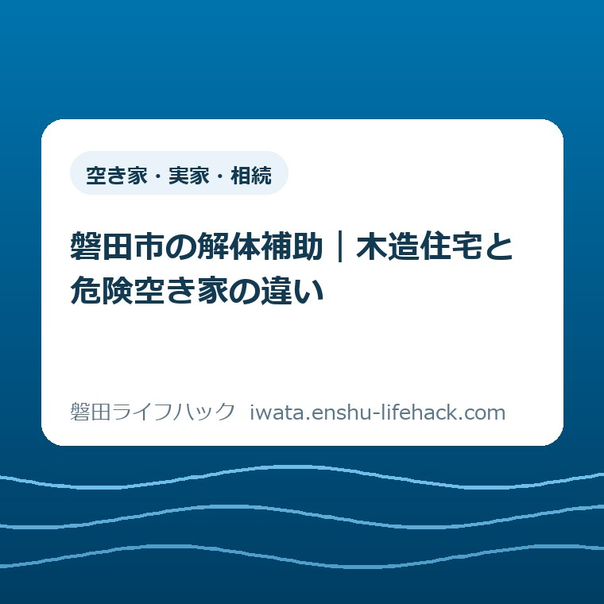

空き家・実家・相続
磐田市の解体補助｜木造住宅と危険空き家の違い

この記事の要点
Q. 実家の解体補助、木造住宅と危険空き家では何が違う？
A. 磐田市の解体補助は個別条件で変わります。木造住宅は自己居住用で、申請日前1年未満の転居も対象に含みます。危険空き家は2015年5月26日前から未使用で、市の現地判定などが必要です。補助額で選ぶ前に、最後に住んだ日を確認し、市へ相談してください。
実家の管理を続けてきた家族へ
磐田市の解体補助は、家の状態や居住歴、申請する人の条件によって利用できる制度が変わります。草を刈り、郵便物を確かめ、雨の後に屋根を気にする。その手間を引き受けてきた家族にとって、解体は申請書だけの話ではありません。費用を調べる前から、時間と気力を使っているはずです。
大石浩之（磐田市／不動産業）です。私は、補助金を調べた日を解体の決断日にしなくてよいと考えます。家を残すか壊すかの答えは、家族の希望や管理を続けられる期間でも変わります。今日は、制度を比べる材料が一つ増えれば十分です。
国土交通省は2026年9月4日の発表で、2026年10月1日から31日までを「住生活月間」と案内しています。住まいを考える機会ですが、磐田市の解体補助が10月だけ増額されるという案内ではありません。本記事は2026年9月29日に確認した市の2制度を比較します。
比較の入口は、上限40万円か50万円かではありません。「最後に誰が住み、いつ住まなくなったか」です。解体を決めるための話し合いと、申請できる制度を確かめる作業は分けられます。先に居住歴を確かめれば、家族全員の結論を待たずに相談の準備ができます。
木造住宅と危険空き家は、居住歴から比べる
磐田市の「木造住宅の解体助成」と「危険空き家解体費用の助成」は、対象となる家の使われ方が異なります。前者は自己居住用の木造住宅、後者は2015年5月26日前から使用していない危険空き家等が入口です。同じ古い家でも、好きな方を金額で選べる仕組みではありません。
| 比較する点 | 木造住宅の解体助成 | 危険空き家の助成 |
|---|---|---|
| 居住・使用の歴史 | 自己居住用。申請日前1年未満の転居を含む | 2015年5月26日前から未使用 |
| 建物の確認 | 1981年5月31日以前の木造住宅、耐震評点1.0未満など | 特定空家、または1981年5月31日以前の住宅の危険空き家。市が現地判定 |
| 補助の計算 | 対象住宅の解体工事費の23％ | 対象工事費の2分の1以内 |
| 上限 | 対象世帯で40万円、それ以外は30万円 | 50万円 |
| 最初の確認先 | 建築住宅課・建築グループ | 建築住宅課・住宅管理グループ |
意外に見えるのは、空き家になってからの年数が長ければ自動的に危険空き家の助成へ移るわけではない点です。市の案内は「何年以上空いている」という移動する線ではなく、2015年5月26日前という固定の日付を示しています。2020年から未使用の家を、2026年に「十分古い空き家」と考えても、この条件とは合いません。
ただし、最後に住んだ日だけで交付が決まるわけでもありません。木造住宅側には耐震性や住み替え先、危険空き家側には市の判定などの条件があります。居住歴は相談の入口を絞る材料であって、この記事の表は交付の可否を判定する表ではありません。

木造住宅の解体助成は、住み替えまで一緒に確認
磐田市の2026年4月27日更新「木造住宅の解体助成」は、耐震性の低い自己居住用住宅の解体を支える制度です。ページ内では「木造住宅除却工事助成事業」と記載されています。対象には申請日前1年未満の転居も含まれますが、借家は除かれています。
市が示す条件は、1981年5月31日以前に建築された木造住宅であること、耐震診断の評点が1.0未満であることです。浴室・台所・便所を備えることも必要です。離れや物置を片付けたいという相談を、母屋の解体と同じ扱いにはできません。付属建築物等は対象外とされています。
解体後の暮らしにも条件があります。建替えをするか、耐震性のある住宅へ住み替える必要があります。市の案内では住み替え先として、1981年6月1日以降に建築された住宅、または耐震評点1.0以上の住宅が示されています。「今ある家を壊す費用」だけで申請の準備が完了するわけではありません。
親が転居し、子が実家を管理している場合は、誰の自己居住用住宅なのか、誰が申請するのかを分けて伝える必要があります。相続したから子自身も自己居住の条件を満たす、とは読めません。住所が建物所在地と違う場合の資料や、所有者以外が申請する場合の承諾書も市のページに案内されています。
木造住宅の補助は解体工事費の23％で、子育て等世帯または高齢者等世帯は上限40万円、その他の世帯は上限30万円です。対象世帯には年齢・子どもの人数・障害や要介護認定等に関する定義があります。「親が高齢だから40万円」と家族だけで確定せず、実際の世帯構成を市に伝えて確認します。
市は、解体工事の契約前に補助金の申請と交付決定が必要と明記しています。見積書を集めることと工事を発注することは別です。補助を使う前提なら、契約の署名前に市へ相談してください。完了報告の提出期限は市のページで2月末までとされており、利用する年度の工程も確認が必要です。
建替え自体を考える家族は、実家建替え補助と相続後1年の条件を整理した記事も参照してください。別の補助制度で出てくる「相続後」の期間と、木造住宅の解体助成の「転居から申請まで」の期間を、同じ期限として扱わないことが肝心です。
危険空き家の助成は、未使用の時期と市の判定が必要
磐田市の2026年5月25日更新「危険空き家解体費用の助成」が案内する正式な制度名は、「磐田市危険空き家等除却事業費補助金」です。2024年度以降は、2015年5月26日前から使用していない建物に対象を限定したと説明されています。所有者には相続関係者なども含まれます。
対象となるのは、法に基づく特定空家、または1981年5月31日以前に建築された住宅の危険空き家です。いずれも市が現地調査で判定します。古い外壁の写真や家族の感覚だけでは、この判定を代わりに行えません。「古い」「空いている」「危険と市が判定する」は別の確認です。
市の案内には職員が室内を調査し、立ち会いに協力することも書かれています。遠方の家族だけで管理している場合、帰省日を工事日と先に決めると段取りが合わなくなるおそれがあります。調査の日程や鍵の扱い、誰が立ち会えるかを相談の中で確認するのが現実的です。
工事は建物だけでなく、敷地内の埋設物や付属する門・塀・樹木なども撤去し、原則として更地にする内容です。木造住宅の制度が対象住宅の解体費を示すのに対し、危険空き家側では撤去範囲にも目を向ける必要があります。見積書の総額がそのまま補助計算の対象になるとは限りません。
市税の滞納がないこと、所有権以外の権利がある場合の同意なども申込要件です。他の補助金を受けた場合には、交付から10年以上経過という条件も載っています。2制度の補助額を足した資金計画は組まず、過去の補助利用も含めて市へ申告し、扱いを確認してください。
危険空き家側のページだけでは、家ごとの未使用の証明方法や現在の予算残額までは確定できません。家族が持つ記録を伝え、必要な証拠と申請・契約・着工の順番を担当へ確かめます。対象か不明なまま解体してしまえば、市が現地で確認するための建物がなくなってしまいます。
補助額は上限額ではなく、対象費用から計算する
磐田市の2制度は、上限額を一律にもらう仕組みではありません。木造住宅は対象の解体工事費に23％を掛け、世帯区分の上限と比べます。危険空き家は対象工事費の2分の1以内で、上限50万円です。最初に知りたいのは、見積もりのどの項目が対象費用として認められるかです。
計算の例として、補助対象と認められる費用を仮に100万円と置きます。木造住宅側は100万円×23％で23万円です。危険空き家側は100万円×2分の1で50万円となります。これは計算方法を示す仮定であり、磐田市の解体相場でも、同じ家に両制度を使えるという例でもありません。
同じ仮定で補助対象費用が200万円なら、木造住宅の23％は46万円になります。ただし上限で止まるため、該当世帯なら40万円、それ以外なら30万円です。危険空き家側も半額の100万円が支払われるのではなく上限50万円です。「半額補助」という言葉だけで家族の持ち出しを決めるのは早計です。
私は、費用のメモには工事見積総額と補助対象費用を別々に書くことを勧めます。家財整理なども含めた請求の中で、どこまでが今回の助成に入るかは市の確認が必要です。入金の時期も確認し、受け取る予定の補助金を、契約時にすでに手元にあるお金として数えない方が家計を守れます。
家を残す可能性があるなら、解体額だけで比較を閉じないでください。耐震補強とシェルターを比べた記事は、住み続ける側から考える材料になります。どの工事を選ぶかは建物の調査や暮らしの希望で変わり、補助額が最大になる案が家族の最善とは限りません。
良い点——目的の違う家に、別々の入口がある
磐田市の2制度の良い点は、耐震性の低い住まいからの移行と、危険な空き家の除却を別の入口で扱っていることだと私は考えます。住んでいる家をどう安全な住まいにつなぐかと、使用されていない家の危険をどう減らすかでは、家族が抱える課題も準備も違うからです。
市のページに、対象条件、補助の計算、必要書類、担当するグループが掲載されている点も助かります。家族は窓口へ行く前に、建築年や転居日が不明だと気づけます。問い合わせる人と記録を持っている人が違っても、同じページ番号を共有すれば話の土台をそろえられます。
私は、危険空き家の判定を市の現地調査で行う点も、家族だけで判断を背負わずに済む仕組みと受け止めています。ただし調査を受けることは解体の契約とは別です。家の状態を確認する段階と、費用を負担して発注する段階を区別して説明してもらえれば、相談に進みやすくなります。
注文したい点——2つの日付を、金額と同じ場所に
磐田市の解体助成の案内で私が注文したい点は、居住歴を比べる手がかりを横に並べて見られると助かる、ということです。各ページには条件が書かれています。それでも、家族が「解体補助」で調べる場面では、別々のページにある上限額だけを先に覚えてしまう余地があります。
「申請日前1年未満の転居」と「2015年5月26日前から未使用」を同じ場所に示せば、どの記録を探すかが分かります。窓口へ行った後で日付を調べ直すのは、休みを取った人にも、古い書類を探す家族にも負担です。私は、入口の比較があるだけで往復を減らせると考えます。
証明資料についても、手元の記録で相談を始めてよいのか、正式申請には何が必要かを分けた案内があると助かります。電話で最初に話す材料と、交付申請の添付書類を一緒に考えると、全部そろわないから相談できないと感じてしまうからです。これは案内への要望であり、提出書類を省いてよいという意味ではありません。
家族のメモは、最後に住んだ日と使用歴を分ける
解体補助の相談用メモには、最後に住んだ日、転居した日、その後の使い方を分けて記すと伝わりやすくなります。住民票を動かした日と、実際に生活を終えた日が同じとは限りません。危険空き家の「未使用」がどの状態を指すかも、家族だけで解釈を決めずに市へ確認します。
例えば、住む人はいなくなったが荷物を置き、時々泊まっていた家は、その経過をそのまま伝えます。電気や水道の停止日も居住歴を思い出す材料にはなりますが、それだけで市が未使用を認めるとは断定できません。この記事で挙げる記録は相談の補助であり、市が認める証明書の一覧ではありません。
日付を調べる担当と、解体の費用を出す担当を、同じ人に固定する必要はありません。私は、親の転居に立ち会った人には日付を、書類を預かる人には書類名を聞くという分担を勧めます。分かったことだけ一枚に集め、空欄は「未確認」のまま残します。推測の年月日を正式な事実のように共有しないためです。
家族会議の前に整理する項目に迷う場合は、空き家相談会へ持っていく家族メモの記事が使えます。今回の比較では、そのメモの最初に居住歴を一行足す形で十分です。新しい厚い資料を作るより、相談する人が日付の出所を説明できる方が役に立ちます。

大石の視点——補助が使えるかと、壊すかは別の判断
実家の解体を考える家族には、まだ決めない自由を残したいと私は考えます。補助が使えるかを調べることは、家を壊す約束ではありません。逆に、補助が使えないという結果だけで、管理を続ける役目を一人に戻してしまうのも違います。制度の対象外でも、家族が払っている手間は消えないからです。
私なら、家族の話し合いの紙を前にしたとき、解体に賛成か反対かの欄より先に、最後に住んだ日を書く欄を作ります。これは特定の相談の実話ではなく、私の提案です。日付を一つ確かめる作業なら、家への思いが違う家族同士でも取り組めます。決断を競う前に、同じ材料を見る時間が必要だと思います。
私にも、傷みが心配な家を前に、家族の気持ちを待つ時間をどこまで取れるのかという迷いがあります。現地を見ずに「ゆっくりでよい」と言い切ることはできません。危険が疑われる場合は市へ状態を伝える。その相談と、補助の結論が出るまで家族の意思決定を保留することを、混同しないようにしたいのです。
ここは言い切れます。上限額だけを見て解体を決める順番にはしません。使える制度、工事の総額、解体後の使い道、家族の負担を確かめてから決めます。補助の条件に合わせるために実際の居住歴を都合よく読み替えることも、判断の材料を壊してしまいます。
対案・結論——今日は最後に住んだ日を一つ確認する
磐田市の解体補助を比べるために今日することは、実家に最後に住んだ日を一つ確認することです。日まで分からなければ、分かる年月と「日付未確認」を書きます。親の転居を知る家族に聞くか、手元の記録を一つ見る。そのどちらかで、今日の作業を終えて構いません。
次の相談では「この家には誰がいつまで住み、その後はこう使っていた」と伝えます。木造住宅の解体助成は建築住宅課の建築グループ、危険空き家の助成は同課の住宅管理グループが案内元です。どちらも市の掲載所在地は磐田市国府台3-1、西庁舎2階です。まず公式ページの問い合わせ先から対象と必要資料を確認できます。
2026年9月29日時点で、個別の家の対象可否や予算残額は未確認です。制度・金額は変更される場合があります。相続、登記、税務の個別判断は担当する専門家へ確認してください。市の申請要件と手順は、最後に必ず磐田市の公式ページで確認してください。
よくある質問
磐田市の解体補助で迷いやすい点を、居住歴と契約の順番から整理します。最終的な対象判断は市に確認してください。
古い木造の実家なら、どちらかの補助を使えますか？
古い木造住宅というだけでは決まりません。木造住宅の解体助成は自己居住や転居時期、耐震性、住み替え等の条件があります。危険空き家の助成は2015年5月26日前から未使用で、市の現地判定などが必要です。居住歴によって両制度のどちらにも当てはまらない可能性があるため、市に個別に確認してください。
親が転居した日と、相続した日はどちらを見ますか？
木造住宅の解体助成で確認する転居時期と、相続した日は別の情報です。危険空き家の助成では2015年5月26日前から使用していないことが条件です。誰がいつまで住み、転居後にどう使い、いつ相続したかを分けて伝えてください。住民票や家族の記憶のどれを証明として使えるかは、市へ確認が必要です。
見積もりを取ったら、先に解体契約をしてよいですか？
木造住宅の解体助成は、契約前の申請と交付決定が必要です。見積もり取得は契約と分けてください。危険空き家の助成も市の現地判定が関わるため、契約・着工する前に手順を担当へ確認します。見積総額の全てが補助対象とは限らず、対象費用、交付額、支払いと入金の時期を確かめてから資金計画を立ててください。
解体を決める前の確認は、磐田市「木造住宅の解体助成」と磐田市「危険空き家解体費用の助成」の公式ページで行ってください。
参考にした公式情報
- 木造住宅の解体助成／磐田市（2026年4月27日更新）（2026年9月29日確認）
- 危険空き家解体費用の助成／磐田市（2026年5月25日更新）（2026年9月29日確認）
- 10月は「住生活月間」です／国土交通省（2026年9月4日発表）（2026年9月29日確認）
最終確認日：2026-09-29 ／ 本記事は公表情報と執筆者の見解を分けて記載しています。制度・数値・公開状況は変更される場合があるため、最新情報は磐田市公式ページでご確認ください。